사진으로 사용자의 퍼스널 컬러(12톤)와 체형을 분석하고,
날씨 · 상황(TPO) · 예산까지 함께 고려해 실제로 살 수 있는 무신사 상품 코디와 가상 피팅을 보여주는 AI 패션 추천 서비스
기존 쇼핑몰은 많이 팔리는 인기 상품 위주로 보여줍니다. Style.ai는 사용자의 피부톤·체형과 그날의 상황·날씨·예산을 함께 반영해 '나에게 맞는 코디'를 추천하는 것을 목표로 했습니다.
무신사 등 주요 쇼핑몰은 랭킹·판매량 중심으로 상품을 보여줍니다. 수많은 상품 중에서 "내 피부톤에 어울리는지", "내 체형에 맞는지"는 사용자가 직접 판단해야 합니다.
오프라인 퍼스널 컬러·체형 진단은 비용 부담이 크고, 진단하는 사람이나 조명 상태에 따라 결과가 달라질 수 있습니다.
"비 오는 토요일 결혼식, 20만 원 이하"처럼 날씨, 자리의 격식, 예산을 한 번에 고려해 주는 추천은 찾기 어려웠습니다.
3인 팀에서 제가 직접 구현한 부분과, 팀원이 만든 모듈을 연결(통합)한 부분을 구분해 정리했습니다. 이후 각 섹션 제목 옆 배지(직접 구현 / 팀원 구현 · 통합 담당)로도 구분해 두었습니다.
run.bat 작성FastAPI 서버 하나에 6개의 API를 두고, 사진 분석 → 상황·날씨 분석 → 상품 검색 → 가상 피팅을 순서대로 연결했습니다. 화면은 Streamlit으로 단계별 진행(스텝퍼) 형태로 구성했습니다.
2026년 7월, 스마트폰에서 ngrok HTTPS 주소로 접속해 직접 촬영하고 분석한 화면입니다. 왼쪽부터 실제 사용 순서이며, 이미지를 누르면 크게 볼 수 있습니다.
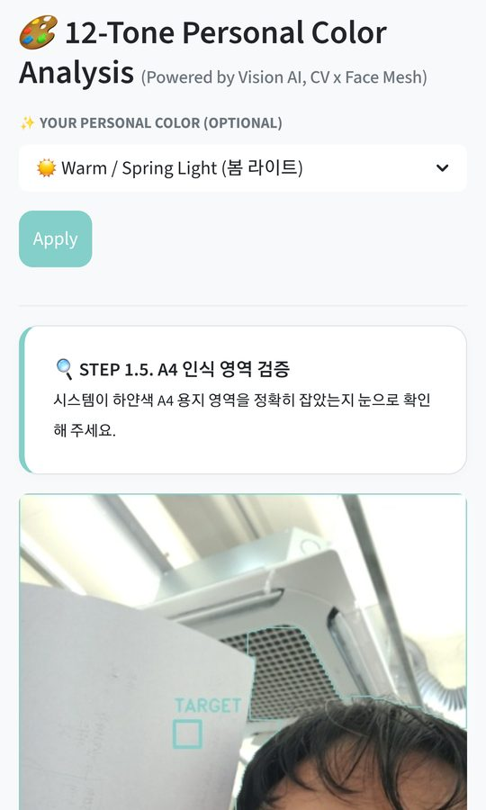
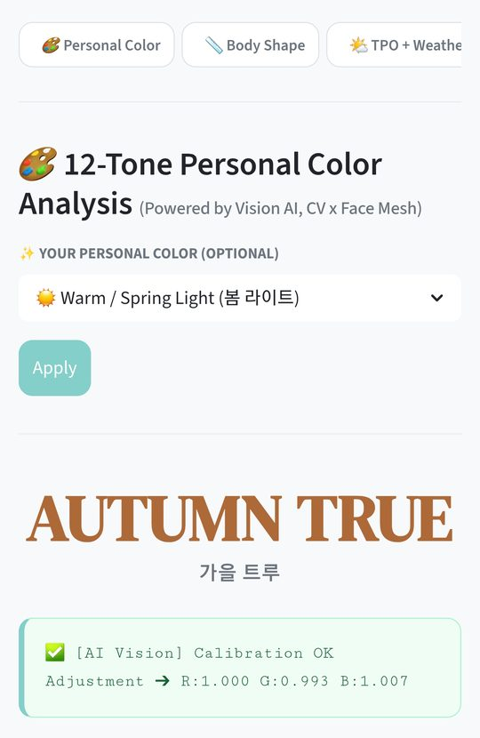
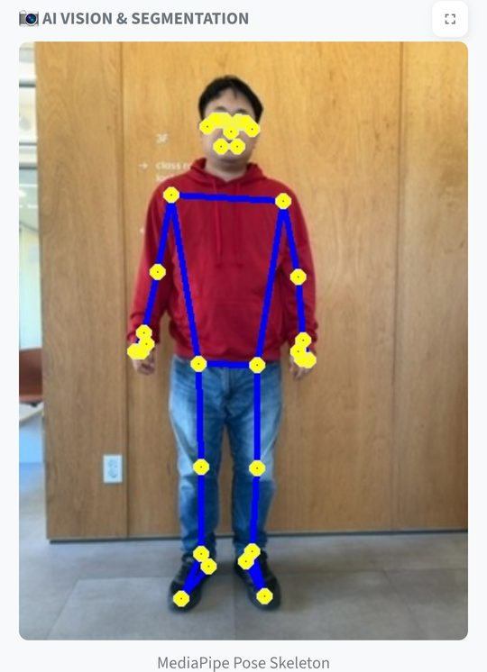
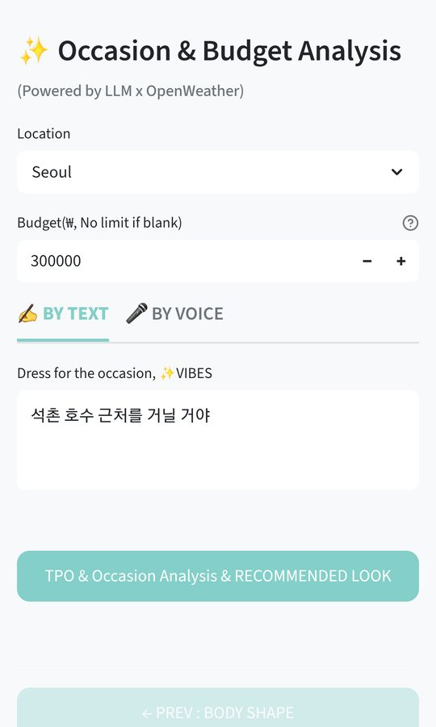
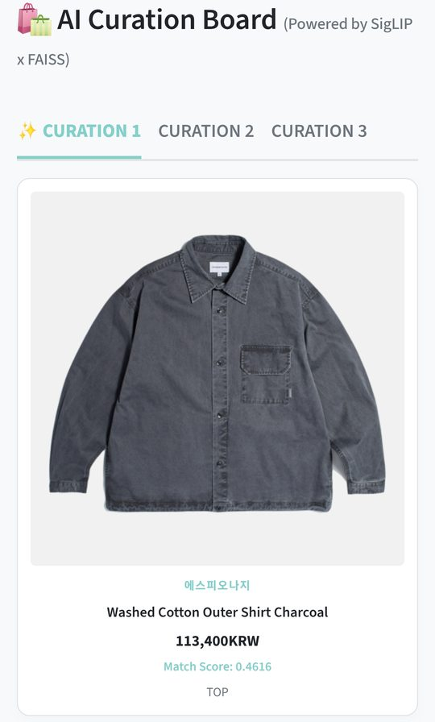
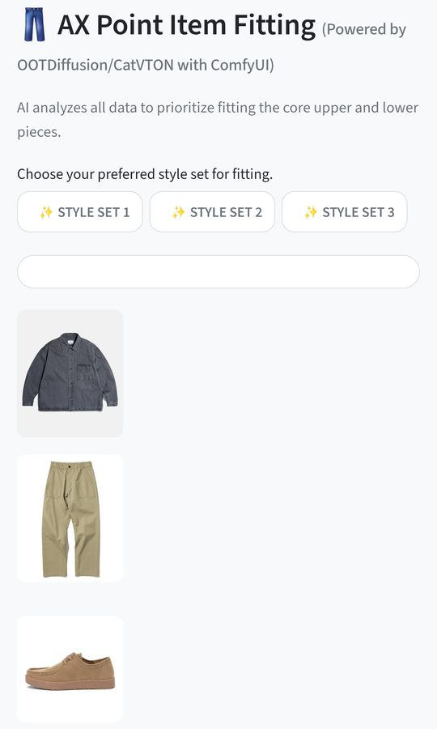
사진은 조명과 옷차림에 따라 쉽게 왜곡됩니다. 이를 줄이기 위해 퍼스널 컬러는 A4 용지로 색을 보정한 뒤 분석하고, 체형은 옷 외곽선 대신 관절 위치를 기준으로 측정했습니다.
같은 사람도 노란 실내등 아래에서는 Warm(봄·가을), 창가 자연광에서는 Cool(여름·겨울)로 판정될 수 있습니다. 그래서 얼굴을 찍기 전에 흰색 기준이 되는 A4 용지를 먼저 촬영하게 했습니다.
OpenCV로 채도가 낮고 밝은 영역을 찾아 A4 후보로 잡고, 잡음을 정리한 뒤 가장 큰 영역이 화면의 3% 이상일 때만 A4로 인정합니다. 용지 가장자리의 그림자가 섞이지 않도록 중앙의 작은 정사각형(짧은 변 길이의 6%)에서만 색을 재고, 세 색 채널(B·G·R)이 같은 값이 되도록 하는 채널별 보정 배율(gain)을 계산해 얼굴 사진에 그대로 적용합니다.
A4 중앙이 너무 어두우면 '품질 낮음'으로 알려 주고, A4를 어디서 인식했는지 표시한 이미지를 함께 돌려줘 사용자가 다시 찍을지 판단할 수 있게 했습니다.
얼굴 전체 평균을 쓰면 머리카락·눈썹·입술·배경색이 섞입니다. MediaPipe Face Mesh의 얼굴 랜드마크(468개) 중 양쪽 볼을 둘러싸는 16개 점으로 다각형을 만들어 그 안의 픽셀만 사용했습니다. 결과 화면에는 얼굴 그물망, 이마·양 볼 샘플 지점 32개, 핵심 지점 3개(이마 중앙, 좌·우 볼)를 겹쳐 그려 어디서 색을 뽑았는지 확인할 수 있습니다.
피부 픽셀을 K-Means(3개 그룹)로 묶어 가장 큰 그룹의 중심색을 대표 피부색으로 정합니다. 단순 평균보다 그림자·하이라이트에 덜 흔들립니다. 이 색을 LAB 색공간으로 바꾸면 밝기(L)와 색 성향(a: 빨강↔초록, b: 노랑↔파랑)을 따로 볼 수 있어, '조명이 어두운 것'과 '피부색이 노란/붉은 것'을 섞지 않고 판단할 수 있습니다. b > 12면 Warm, 아니면 Cool로 먼저 나누고, 밝기와 a·b 값에 따라 봄·여름·가을·겨울의 세부 톤(Light / Bright / True / Mute / Deep)으로 정합니다.
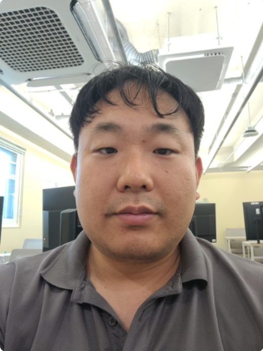
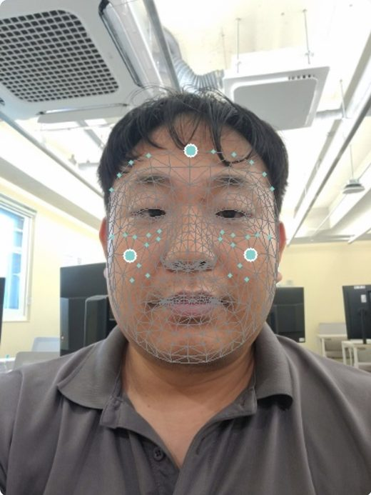
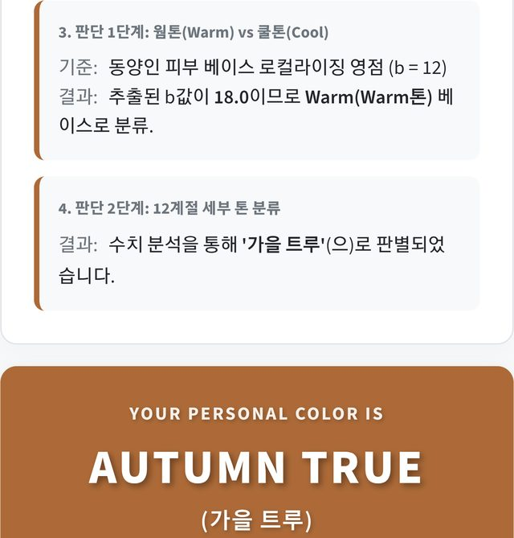
초기 버전은 사람 영역 마스크(segmentation mask)에서 가로 폭을 재는 방식이었는데, 오버핏 옷이나 두꺼운 외투를 입으면 옷의 폭이 그대로 어깨·골반 폭으로 잡혀 실제보다 크게 측정됐습니다. 그래서 MediaPipe Pose가 주는 3D 관절 좌표(world landmarks, 깊이 z 포함)를 사용해 어깨 관절(11–12번)과 골반 관절(23–24번) 사이의 3D 거리를 재는 방식으로 바꿨습니다.
입력한 키를 3D 좌표상의 머리~발뒤꿈치 길이로 나눠 cm 환산 비율(scale_cm)을 구합니다. 키를 입력하지 않으면 사진 속 전신 높이(픽셀)로 키를 대략 추정하고, 150~195cm 범위로 제한합니다.
관절 사이 거리에는 살·근육 두께가 빠져 있으므로 고정 보정 계수(어깨 ×1.35, 골반 ×1.45)를 곱하고, BMI가 25를 넘으면 1 + (BMI − 25) × 0.015만큼 더 키웁니다. 가슴 단면은 어깨 값의 0.86배로 추정합니다.
어깨 ÷ 골반 비율이 0.95 ~ 1.15면 직사각형(균형형), 그 외는 역삼각형으로 분류해 LLM 프롬프트에 전달합니다. 측정선을 그린 이미지와 스켈레톤(뼈대) 이미지를 함께 보여줍니다.
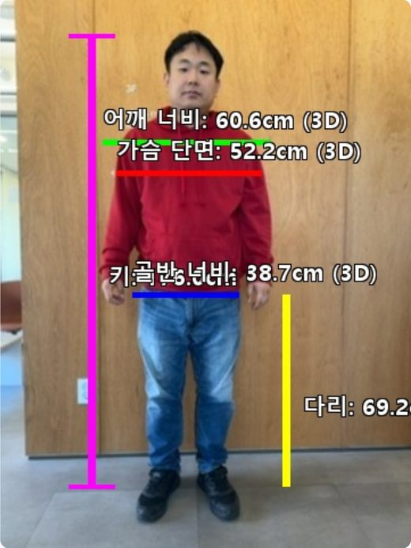
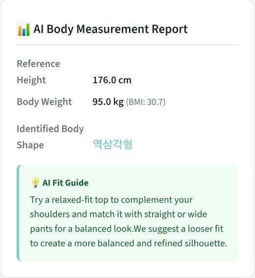
LLM이 그럴듯하지만 틀린 답을 만들지 않도록, 날짜 계산은 코드가 맡고 LLM은 정해진 JSON 형식으로 '검색 조건'만 만들게 했습니다.
"이번 주 토요일 비 오는데 데이트 룩 추천해줘" 같은 요청에서 날짜 계산을 LLM에 맡기면 요일을 틀리는 경우가 있었습니다. 그래서 백엔드 Python 코드가 오늘 요일을 기준으로 '토요일·일요일·내일'을 실제 날짜(YYYY-MM-DD)로 계산하고, OpenWeatherMap 5일 예보(3시간 단위)에서 그 날짜 오후(12시·15시)의 기온과 날씨를 찾아 프롬프트에 넣습니다. 예보를 찾지 못하면 현재 날씨, 그마저 실패하면 기본값(15°C, 맑음)을 사용합니다.
예를 들어 장례식인데 퍼스널 컬러는 밝은 봄 웜톤인 경우처럼, 조건이 서로 부딪힐 때 어떤 것을 우선할지 프롬프트에 순서를 적어 두었습니다. 번호가 낮을수록 우선합니다.
response_format={"type": "json_object"}로 JSON 출력을 강제했습니다. 사용자에게 들려줄 한국어 설명(docent)은 edge-tts(ko-KR-SunHiNeural) 음성으로 읽어 주고, 상품 검색에 쓸 문구(vector_target)는 [색상] [소재] [핏] [아이템] 형태의 짧은 영어로 따로 받습니다. 아우터는 기온이 18°C 미만이거나 필요할 때만 required: true로 받아 검색합니다.
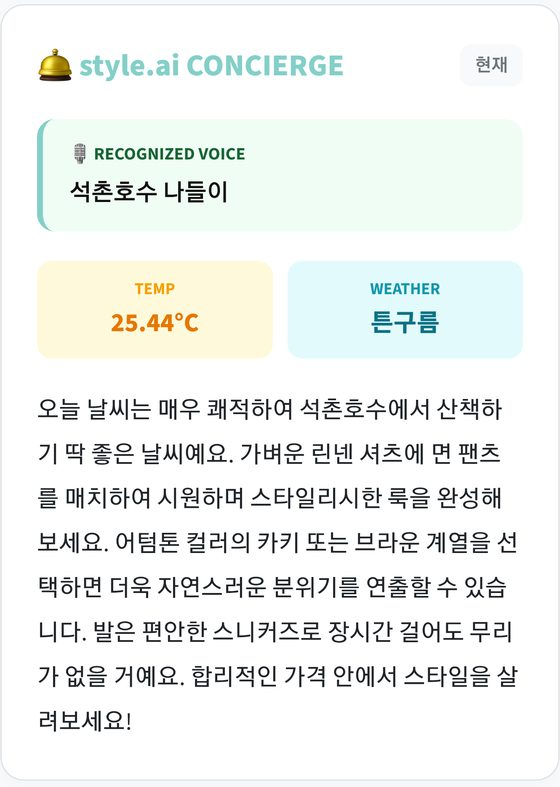
docent)은 edge-tts 음성으로도 재생됩니다.LLM이 만든 검색 문구로 실제 무신사 상품을 찾고, 정해진 예산 안에서 서로 다른 코디 3세트를 구성합니다.
무신사 상품 6,096건의 이미지를 Google SigLIP으로 768차원 벡터로 바꿔 FAISS 인덱스로 저장했습니다. 요청이 오면 vector_target 문구를 같은 SigLIP 텍스트 인코더로 벡터화·정규화한 뒤, 코사인 유사도 기준 상위 1,000개 후보를 넓게 가져옵니다.
초기 버전은 한국어 검색 문장을 OpenAI 임베딩(text-embedding-3-small)으로 바꿔 검색했는데, 상품 인덱스는 SigLIP으로 만들어져 있어 서로 다른 기준의 벡터를 비교하는 셈이었습니다. 그래서 검색 문구도 SigLIP으로 통일하고, SigLIP이 영어 위주로 학습된 점을 고려해 문구를 짧은 영어로 바꿨습니다. (SigLIP 모델 호출에 이미지 입력이 함께 필요해, 고정된 검은색 더미 이미지를 넣었습니다.)
벡터 검색은 '비슷한' 상품을 찾을 뿐이라 금지 품목이 섞일 수 있습니다. 그래서 후보마다 카테고리 일치, 비·눈일 때 가죽·스웨이드·캔버스 신발 제외, 격식 자리에서 트랙·스웻·후드·데님 등 캐주얼 제외, 가격 상한, 유사도 0.15 미만 제외를 차례로 확인합니다. 통과한 상위 5개 중 하나를 골라 세트마다 다른 상품이 나오게 했습니다.
상의 → 하의 → 아우터 → 신발 순서로 고르면 앞에서 예산을 다 써서 신발을 못 고르는 문제가 생깁니다. 그래서 각 카테고리를 고를 때 아직 고르지 않은 카테고리의 최소 금액(하의 3만 · 아우터 5만 · 신발 4만 원)을 먼저 빼 두고, 남은 금액을 그 카테고리의 가격 상한으로 씁니다. 예를 들어 총예산이 20만 원이면 상의는 최대 8만 원까지만 고려합니다. 앞에서 싸게 고르면 남은 돈은 다음 카테고리로 넘어갑니다.
3세트에 같은 상품이 반복되지 않도록, 이미 고른 상품의 DB 번호와 상품명(소문자)을 함께 제외 목록에 넣었습니다. 크롤링 데이터에 같은 상품이 다른 번호로 중복 저장된 경우가 있어 상품명도 비교합니다. 상품 사이즈표와 추정 치수가 모두 있으면 차이가 가장 작은 사이즈를 함께 제안합니다(상의: 어깨+가슴, 하의: 허리+기장×0.5).
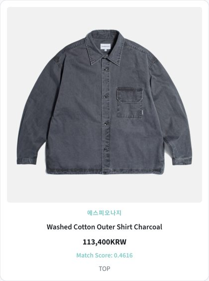
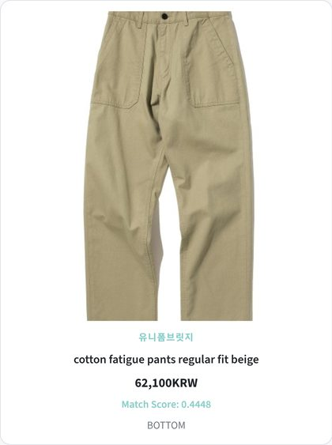
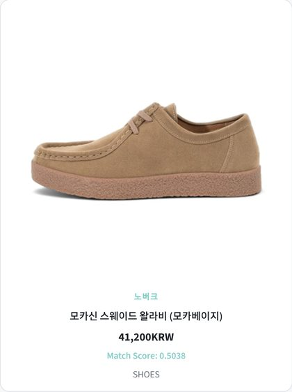
기온이 25°C라 LLM이 아우터를 '필요 없음'으로 판단해 아우터는 검색하지 않았습니다(화면의 "OUTER No Matches"). 비 예보가 없어 스웨이드 신발도 제외되지 않았고, 상의를 고를 때 남은 카테고리 몫(하의 3만·아우터 5만·신발 4만 원)을 먼저 빼 두어 상의 상한은 18만 원이었습니다.
추천된 상의·하의를 사용자 전신 사진에 입혀 보는 기능입니다. 이미지 생성은 별도로 실행 중인 ComfyUI(CatVTON 워크플로우)가 맡고, FastAPI는 입력 전달과 결과 회수를 담당합니다.
FastAPI가 사용자 전신 사진을 ComfyUI input 폴더에 저장하고, 추천 상의(아우터가 있으면 아우터)와 하의 이미지를 상품 이미지 폴더에서 찾아 같은 폴더로 복사합니다.
미리 저장해 둔 workflow_api.json을 불러와 인물(노드 2)·상의(노드 16)·하의(노드 7)의 이미지 파일명만 바꿔 실행합니다.
ComfyUI API(/prompt)에 작업을 등록해 prompt_id를 받고, /history/{prompt_id}를 1초마다 확인합니다(최대 150초). 완료되면 결과 이미지를 받아 Base64로 프론트엔드에 보내고 임시 파일을 지웁니다. 화면에서는 원본과 결과를 나란히 비교할 수 있습니다.
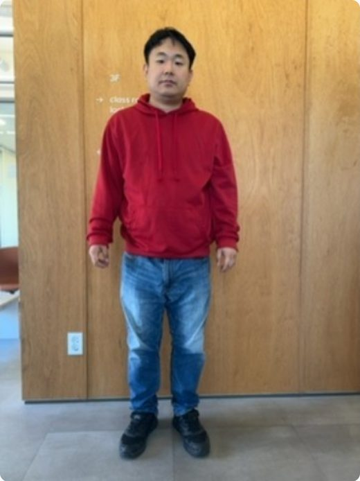
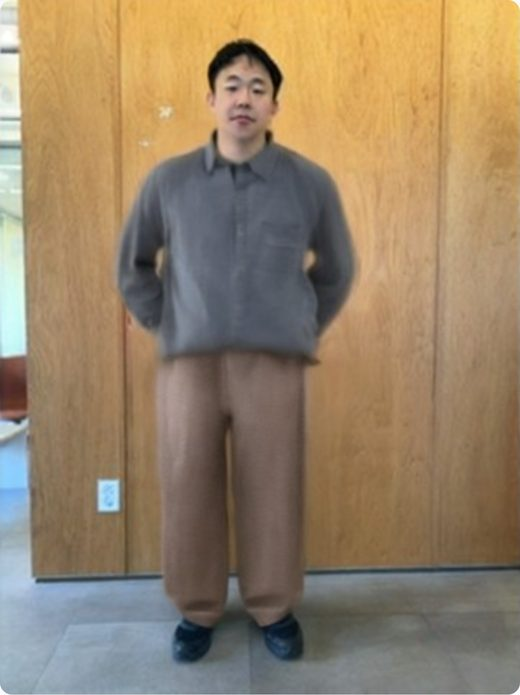
노트북 + 스마트폰 환경에서 실제 시연을 준비하며 겪은 문제와 해결 과정입니다.
시연을 위해 스마트폰으로 Streamlit 화면에 접속하자 카메라가 실행되지 않았고, 분석 요청은 연결 거부(Connection Refused)로 실패했습니다.
1. 모바일 브라우저는 보안 정책상 HTTPS 주소가 아니면 카메라 접근을 막습니다.
2. 프론트엔드의 API_BASE = "localhost"가 노트북이 아니라 스마트폰 자기 자신을 가리켜 요청이 백엔드에 닿지 않았습니다.
1. ngrok으로 프론트엔드에 HTTPS 주소를 발급해 스마트폰 카메라를 사용할 수 있게 했습니다.
2. 백엔드를 0.0.0.0으로 실행해 같은 Wi-Fi에서 접근할 수 있게 하고, API_BASE를 노트북의 Wi-Fi IP(172.16.x.x)로 설정했습니다.
3. 백엔드·프론트엔드·ngrok을 한 번에 띄우는 run.bat을 만들어 시연 준비 과정을 단순화했습니다. (해결 후 스마트폰에서 촬영한 화면은 04. 실제 시연 화면 참고)
FAISS 검색과 메타데이터 조회는 정상이었지만 추천 카드의 이미지가 모두 깨졌습니다. 서버를 다른 폴더에서 실행하면 인덱스·메타데이터 로딩부터 실패하기도 했습니다.
경로 기준이 세 가지로 뒤섞여 있었습니다.
1. 서버의 이미지 경로가 data/image였지만 실제 폴더는 data/images
2. 메타데이터의 이미지 경로에 크롤링 당시 PC의 절대 경로(C:/PJ03/.../data/image/...)가 그대로 저장됨
3. BASE_DIR가 특정 개발자 PC 경로로 고정되어 다른 환경에서 동작하지 않음
1. BASE_DIR = Path(__file__).resolve().parent.parent.parent로 소스 파일 위치에서 프로젝트 루트를 계산해, 어디서 실행해도 같은 경로를 쓰게 했습니다.
2. /static을 data/images로 다시 연결하고, 메타데이터의 옛 절대 경로는 응답 전에 상대 경로로 정리했습니다.
3. 프론트엔드에서는 정규식으로 (top|bottom|outer|shoes)/... 부분만 뽑아 /static/ URL을 만들고, 같은 경로에서 상품 번호를 뽑아 무신사 구매 링크도 생성했습니다.
PC에서 준비한 JPG로는 잘 되던 /calibrate, /analyze가 아이폰으로 직접 촬영한 사진에서는 곧바로 실패했습니다. "그 자리에서 찍어서 분석"이 핵심인 시연이라 꼭 해결해야 했습니다.
아이폰의 기본 사진 형식은 HEIC인데, OpenCV의 cv2.imdecode()는 HEIC를 읽지 못합니다. 게다가 에러를 내지 않고 None을 반환해, 실제 원인과 다른 위치(img.shape)에서 에러가 나 원인을 찾기 어려웠습니다.
이미지 읽기를 decode_image() 한 곳으로 모았습니다. JPG·PNG는 빠른 OpenCV로 먼저 읽고, 실패했을 때만 PIL + pillow-heif로 다시 읽습니다. 그래도 실패하면 원인이 드러나는 메시지로 명확한 에러를 냅니다. 화이트밸런스·퍼스널 컬러 분석이 같은 함수를 사용해 기기 종류와 상관없이 같은 방식으로 처리됩니다.
가상 피팅 요청 시 ConnectionRefusedError: [WinError 10061]가 발생했습니다.
가상 피팅은 FastAPI 안에서 이미지를 만드는 구조가 아니라, 별도로 실행 중인 ComfyUI(127.0.0.1:8188)에 작업을 넘기는 구조입니다. ComfyUI가 실행 중이지 않으면 요청을 받아줄 서버가 없어 연결이 거부됩니다. 또 결과를 최대 150초까지 기다리는 동안 서버가 다른 요청을 처리하지 못합니다.
1. (적용) 원인을 README에 정리하고, 시연 전 http://127.0.0.1:8188 접속을 먼저 확인하도록 실행 절차에 추가했습니다.
2. (개선 제안, 미구현) 호출 전 ComfyUI 상태를 확인하는 API와 친절한 안내 메시지, 그리고 무거운 생성 작업을 작업 큐(Celery + Redis 등)로 분리하는 구조를 제안했습니다.
처음 시도한 방식이 실패하고, 원인을 찾아 방향을 바꾼 사례 중 제가 직접 구현한 2가지입니다. (전체 8개 사례는 저장소의 PORTFOLIO.md에 정리했습니다.)
같은 사람이 같은 날 찍어도 노란 실내등 아래에서는 Warm(봄·가을), 창가 자연광에서는 Cool(여름·겨울)로 결과가 바뀌었습니다. 퍼스널 컬러 결과는 LLM 프롬프트와 추천 상품의 색까지 바꾸기 때문에, 첫 단계의 이 오차가 추천 전체를 흔드는 구조였습니다.
스마트폰의 자동 화이트밸런스가 장면마다 다르게 적용되어, 찍힌 RGB 값 자체가 이미 조명 색에 물들어 있었습니다. 이 치우침이 Warm/Cool을 가르는 LAB의 b(노랑–파랑) 값에 그대로 실려 판정 경계를 넘겨 버렸습니다.
누구나 가진 A4 용지를 흰색 기준으로 사용하는 보정 단계를 얼굴 촬영 앞에 별도 API(/calibrate)로 분리했습니다. A4 중앙의 색이 회색(무채색)에서 얼마나 벗어났는지를 채널별 보정 배율로 계산해 얼굴 사진에 적용합니다. 보정값은 화면 상태로 남아 얼굴을 여러 번 다시 찍어도 같은 기준을 재사용합니다.
초기에는 얼굴 검출 박스 전체의 평균색을 피부색으로 사용했습니다. 그 결과 검은 머리카락, 짙은 눈썹, 붉은 입술, 밝은 배경이 함께 섞여 실제보다 어두운 색이 나왔고, 분류 결과가 Deep 계열로 쏠렸습니다. 안경을 쓴 경우에는 오차가 더 컸습니다.
사각형 박스는 피부가 아닌 픽셀을 포함할 수밖에 없고, 평균값은 그림자·하이라이트 같은 극단값에 끌려갑니다. 또 어느 픽셀이 쓰였는지 볼 수 없어, 결과가 이상해도 원인을 추적할 수 없었습니다.
① 랜드마크 16개로 만든 볼 다각형 안의 픽셀만 사용하고, ② 평균 대신 K-Means에서 가장 큰 그룹의 중심색을 대표색으로 쓰고, ③ 샘플 지점을 이미지에 표시하고 LAB 값도 응답에 넣어 경계 근처 결과를 숫자로 확인할 수 있게 했습니다.
단계별로 흔히 쓰는 방식과 Style.ai가 택한 방식을 비교했습니다. 정답 데이터를 확보하지 못해 정확도 수치는 측정하지 않았으며, 아래는 구현 방식 기준의 비교입니다.
| 단계 | 일반적인 방식 | Style.ai 적용 기술 | 선택한 이유 |
|---|---|---|---|
| 조명 보정 | 보정 없음 | A4 용지 기준 채널별 보정 | 조명 색 때문에 피부색이 치우치는 문제 완화 |
| 퍼스널 컬러 | 4계절 분류 | LAB 기반 12톤 규칙 분류 | 밝기와 색 성향을 따로 보고 세부 톤까지 구분 |
| 체형·치수 | 2D 실루엣 폭 측정 | MediaPipe Pose 3D 관절 좌표 + BMI 보정 | 헐렁한 옷의 폭에 덜 흔들리는 측정 |
| 날짜·날씨 | LLM이 날짜 추정 | 코드로 날짜 계산 + 5일 예보 매칭 | "이번 주 토요일"을 실제 날짜의 날씨와 연결 |
| 스타일 추론 | LLM 자유 서술 | 4단계 우선순위 프롬프트 + JSON 출력 | 장례식·우천 등 필수 조건 우선, 출력 형식 고정 |
| 상품 검색 | 키워드 일치 검색 | SigLIP(768차원) + FAISS 벡터 검색 | 색·소재·스타일의 의미가 비슷한 상품 검색 |
| 예산 배분 | 가격 필터만 적용 | 남은 카테고리 최소 금액을 먼저 남겨두는 배분 | 앞 카테고리가 예산을 다 써버리는 문제 방지 |
| 가상 피팅 | 이미지 단순 합성 | ComfyUI (CatVTON) 워크플로우 | 사용자 사진에 옷을 자연스럽게 입힌 결과 확인 |
현재 구현에서 확인한 한계와, 실제 서비스 수준으로 가기 위한 다음 단계입니다.
지금은 FAISS 인덱스를 요청마다 디스크에서 읽습니다. 서버 시작 시 한 번만 읽어 메모리에 두도록 바꾸고, ComfyUI 가상 피팅처럼 오래 걸리는 작업은 작업 큐(Celery + Redis 등)로 분리해 진행 상황을 SSE/WebSocket으로 알려 줄 계획입니다.
상위 5개 중 무작위로 고르는 방식을, 유사도·가격·TPO 적합도를 합친 점수 기반 정렬과 다양성을 함께 고려하는 MMR로 바꾸고, 예산은 카테고리 조합 전체를 비교하는 방식으로 개선합니다.
전문가가 진단한 퍼스널 컬러 데이터와 실측 치수 데이터를 확보해 정확도·오차를 측정하고, 고정된 테스트 요청으로 TPO 규칙 위반율을 확인합니다.
API_BASE, ComfyUI 주소·input 폴더 경로를 .env로 분리하고, LLM 응답은 Pydantic으로 검증합니다. ComfyUI 상태 확인 API를 추가해 꺼져 있을 때 바로 안내합니다.
현재는 데모 분석을 위해 업로드한 얼굴·전신 사진과 음성이 data/user_logs에 저장됩니다. 실제 서비스에서는 사용자 동의, 보관 기간, 자동 삭제 정책을 마련하고, 분석이 끝나면 원본을 지우는 방식으로 바꿔야 합니다.